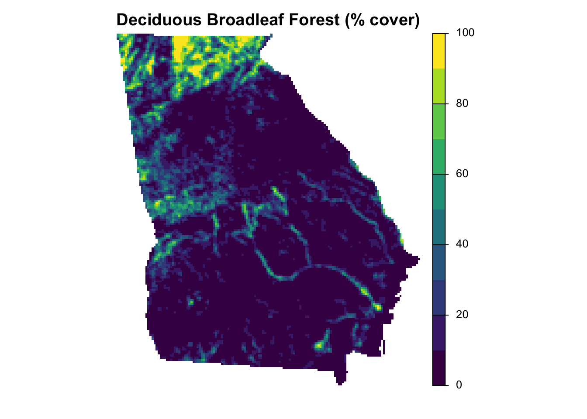

Species distribution models work by finding associations between species occurrence or abundance and environmental variables. Using these relationships, it’s possible to predict the distribution in areas that aren’t sampled, provided we know the value of the environmental variables in these areas. Therefore, to proceed with the modeling in the next several chapters, we’ll need a suite of environmental variables to be used as predictors in our models. The particular set of environmental variables that’s most suitable for a given study will depend on the focal species, region, and time period, as well as the availability of data. When species distributions are well defined by the environmental variables, extrapolations to unsurveyed areas will be more accurate. So, it’s worth considering which variables are important for your species and region.
Fortunately, there are an abundance of freely available, satellite-based environmental datasets that are suitable for species distribution modeling. A small subset of possible data sources available globally includes data describing landcover, elevation, topography, surface water, and intertidal habitat. However, we encourage you to search for datasets suitable for their region and species of interest.
Since there are such a wide range of available environmental datasets, and the distribution mechanisms and formats for each are different and often changing, we will not cover the specifics of how to download and pre-processes satellite-derived data products. Instead, we have downloaded and prepared example landcover and elevation datasets and will demonstrate how environmental variables can be extracted from these datasets in the following sections. This will provide examples of assigning environmental variables based on both categorical (landcover) and continuous (elevation) raster data sets.
For the examples in this book, we’ll use land cover variables derived from the MODIS MCD12Q1 v006 land cover product (Friedl and Sulla-Menashe 2015). This product has global coverage at 500m spatial resolution and annual temporal resolution from 2001-2021. These data are available for several different classification schemes. We’ll use the University of Maryland classification system, which provides a globally accurate classification of land cover in our experience. This system classifies pixels into one of 15 different land cover classes. The terra package includes a nice tutorial for how to download and pre-processing MODIS data like this using the luna R package.
The 2013-2021 data for our focal region (i.e. Georgia) is in the data package in the file data/modis_mcd12q1_umd_2013-2021.tif. This is a multi-band GeoTIFF in which each band corresponds to a year of landcover data. In R, we’ll use the terra package to work with raster data.
At least 60% of area is covered by permanent water bodies.
1
Evergreen Needleleaf Forests
evergreen_needleleaf
Dominated by evergreen conifer trees (canopy >2m). Tree cover >60%.
2
Evergreen Broadleaf Forests
evergreen_broadleaf
Dominated by evergreen broadleaf and palmate trees (canopy >2m). Tree cover >60%.
3
Deciduous Needleleaf Forests
deciduous_needleleaf
Dominated by deciduous needleleaf (e.g. larch) trees (canopy >2m). Tree cover >60%.
4
Deciduous Broadleaf Forests
deciduous_broadleaf
Dominated by deciduous broadleaf trees (canopy >2m). Tree cover >60%.
5
Mixed Forests
mixed_forest
Dominated by neither deciduous nor evergreen (40-60% of each) tree type (canopy >2m). Tree cover >60%.
6
Closed Shrublands
closed_shrubland
Dominated by woody perennials (1-2m height) >60% cover.
7
Open Shrublands
open_shrubland
Dominated by woody perennials (1-2m height) 10-60% cover.
8
Woody Savannas
woody_savanna
Tree cover 30-60% (canopy >2m).
9
Savannas
savanna
Tree cover 10-30% (canopy >2m).
10
Grasslands
grassland
Dominated by herbaceous annuals (<2m).
12
Croplands
cropland
At least 60% of area is cultivated cropland.
13
Urban and Built-up Lands
urban
At least 30% impervious surface area including building materials, asphalt, and vehicles.
15
Non-Vegetated Lands
nonvegetated
At least 60% of area is non-vegetated barren (sand, rock, soil) or permanent snow and ice with less than 10% vegetation.
255
Unclassified
unclassified
Has not received a map label because of missing inputs.
At this point we could use the MODIS land cover data directly, simply extracting the land cover class for each checklist location. However, we instead advocate summarizing the land cover data within a neighborhood around the checklist locations. As discussed in Section 1.1, checklist locations are not precise, so it’s more appropriate to use the habitat in the surrounding area, rather than only at the checklist location. More fundamentally, organisms interact with their environment not at a single point, but at the scale of a landscape, so it’s important to include habitat information characterizing a suitably-sized landscape around the observation location. Based on our experience working with eBird data, a 3km diameter circular neighborhood centered on each checklist location is sufficient to account for the spatial precision in the data when the maximum distance of travelling counts has been limited to 10km, while also being a relevant ecological scale for many bird species.
There are a variety of landscape metrics that can be used to characterize the composition (what habitat is available) and configuration (how that habitat is arranged spatially) of landscapes. Many of these metrics can be calculated using the R package landscapemetrics. We’ll use two simple metrics to summarize landcover data in this book: percent landcover, a measure of composition, and edge density, a measure of configuration. For each landcover class, percent landcover (abbreviated as pland) is the percent of the landscape that is composed of that class and edge density (abbreviated as ed) is the total boundary length of all patches of that class per unit area. For a broad range of scenarios, these two metrics are a reliable choice for calculating environmental covariates in distribution modeling.
We’ll start by finding the full set of unique checklists locations for each year in the eBird data and buffer the points by 1.5km to generate 3km diameter circular neighborhoods centered on each checklist location. Note that the MODIS landcover data are not available for 2022, so we use the 2021 layer for 2022 checklists.
# ebird checklist locationschecklists <-read_csv("data/checklists-zf_woothr_june_us-ga.csv") %>%# landcover data not availble for the full period, so we use the closest yearmutate(year_lc =as.character(pmin(year, 2021)))# generate circular neighborhoods for all checkistsbuffers <- checklists %>%# identify unique location/year combinationsdistinct(locality_id, year_lc, latitude, longitude) %>%# generate a 3km neighborhoodsst_as_sf(coords =c("longitude", "latitude"), crs =4326) %>%st_buffer(dist =set_units(1.5, "km"))
Next, for each location, we crop and mask the landcover layer corresponding to the checklist year to the circular neighborhood around that checklist. Then we use calculate_lsm() from landscapemetrics to calculate pland and ed metrics within each neighborhood. This step may take 30 minute or longer to run.
lsm <-NULLfor (i inseq_len(nrow(buffers))) { buffer_i <-st_transform(buffers[i, ], crs =crs(landcover)) year <-as.character(buffer_i$year_lc)# crop and mask landcover raster so all values outside buffer are missing lsm[[i]] <-crop(landcover[[year]], buffer_i) %>%mask(buffer_i) %>%# calcualte landscape metricscalculate_lsm(level ="class", metric =c("pland", "ed")) %>%# add variables to uniquely identify each pointmutate(locality_id = buffer_i$locality_id, year_lc = buffer_i$year_lc)}lsm <-bind_rows(lsm) %>%select(locality_id, year_lc, class, metric, value)
Finally, we’ll transform the data frame so there’s one row per location and all the environmental variables appear as columns. For each location, any landcover classes that don’t appear within the buffer will not have associated pland and ed metrics; at this stage, we replace these implicit missing values with zeros using the complete list of classes in lc_classes. We also replace the opaque class numbers with more meaningful names from the class description file data/mcd12q1_umd_classes.csv.
lsm_wide <- lsm %>%# fill missing classes with zeroscomplete(nesting(locality_id, year_lc),class = lc_classes$class,metric =c("ed", "pland"),fill =list(value =0)) %>%# bring in more descriptive namesinner_join(select(lc_classes, class, label), by ="class") %>%# transform from long to wide formatpivot_wider(values_from = value,names_from =c(class, label, metric),names_glue ="{metric}_c{str_pad(class, 2, pad = '0')}_{label}",names_sort =TRUE) %>%arrange(locality_id, year_lc)
3.3 Elevation
In this section we’ll demonstrate how to assign elevation variables, which frequently play an important role in shaping species distributions. Amatulli et al. (2018) provide a suite of global, 1km resolution topographic variables designed for use in distribution modeling. A range of variables are available, including elevation, slope, roughness, and many others; we’ll focus on elevation here, but the approach can easily be applied to other variables.
To access the data, visit the website for these data, download the 1 km resolution median elevation product, and save the file (elevation_1KMmd_GMTEDmd.tif) in the data/ subdirectory of your RStudio project. If you’re unable to download the data, we’ve also provided a small subset of the data covering our study extent in the data package.
Analogous to how we assigned landcover variables, we’ll calculate the mean and standard deviation of the elevation within 3km diameter circular neighborhoods centered on each checklist location.
# elevation rasterelevation <-rast("data/elevation_1KMmd_GMTEDmd.tif")# mean and standard deviation within each circular neighborhoodelev_buffer <-exact_extract(elevation, buffers, fun =c("mean", "stdev"),progress =FALSE) %>%# add variables to uniquely identify each pointmutate(locality_id = buffers$locality_id, year_lc = buffers$year_lc) %>%select(locality_id, year_lc, elevation_mean = mean,elevation_sd = stdev)
Now, let’s combine the landcover and elevation variables together, join them back to the checklist data, and save them to be used as model predictors in the upcoming chapters.
# combine elevation and landcoverenv_variables <-inner_join(elev_buffer, lsm_wide,by =c("locality_id", "year_lc"))# attach and expand to checklistsenv_variables <- checklists %>%select(checklist_id, locality_id, year_lc) %>%inner_join(env_variables, by =c("locality_id", "year_lc")) %>%select(-locality_id, -year_lc)# save to csv, dropping any rows with missing variableswrite_csv(drop_na(env_variables), "data/environmental-variables_checklists.csv", na ="")
3.4 Prediction grid
After training a species distribution model, the goal is typically to make predictions throughout the study area. To do this, we’ll need a prediction grid: a regular grid of habitat variables over which to make predictions. In this section, we’ll create such a prediction grid for our study region (Georgia) using the MODIS landcover data from the most recent year for which they’re available in addition to elevation data. To start, we’ll create a template raster with cells equal in dimension to the diameter of the circular neighborhoods we used above. It’s important to use an equal area coordinate reference system for the prediction grid; we’ll use a Lambert’s azimuthal equal area projection centered on our study region.
# lambert's azimuthal equal area projection for georgialaea_crs <-st_crs("+proj=laea +lat_0=32.5 +lon_0=-83.5")# study region: georgiastudy_region <-read_sf("data/gis-data.gpkg", layer ="ne_states") %>%filter(state_code =="US-GA") %>%st_transform(crs = laea_crs)# create a raster template covering the region with 3km resolutionr <-rast(study_region, res =c(3000, 3000))# fill the raster with 1s inside the study regionr <-rasterize(study_region, r, values =1) %>%setNames("study_region")# save for later user <-writeRaster(r, "data/prediction-grid.tif",overwrite =TRUE,gdal ="COMPRESS=DEFLATE")
Next, we extract the coordinates of the cell centers from the raster we just created, convert these to sf point features, and buffer these to generate 3km circular neighborhoods.
Now we can calculate the landcover and elevation variables exactly as we did for the eBird checklists in the previous two sections. First, the landscape metrics pland and ed from the landcover data. Note that we use the most recent year of landcover data (i.e. 2021) in this case.
# estimate landscape metrics for each cell in the prediction gridlsm_ps <-NULLfor (i inseq_len(nrow(buffers_ps))) { buffer_i <-st_transform(buffers_ps[i, ], crs =crs(landcover))# crop and mask landcover raster so all values outside buffer are missing lsm_ps[[i]] <-crop(landcover[["2021"]], buffer_i) %>%mask(buffer_i) %>%# calcualte landscape metricscalculate_lsm(level ="class", metric =c("pland", "ed")) %>%# add variable to uniquely identify each pointmutate(cell_id = buffer_i$cell_id)}lsm_ps <-bind_rows(lsm_ps) %>%select(cell_id, class, metric, value)# transform to wide formatlsm_wide_ps <- lsm_ps %>%# fill missing classes with zeroscomplete(cell_id,class = lc_classes$class,metric =c("ed", "pland"),fill =list(value =0)) %>%# bring in more descriptive namesinner_join(select(lc_classes, class, label), by ="class") %>%# transform from long to wide formatpivot_wider(values_from = value,names_from =c(class, label, metric),names_glue ="{metric}_c{str_pad(class, 2, pad = '0')}_{label}",names_sort =TRUE,values_fill =0) %>%arrange(cell_id)
And now the mean and standard deviation of elevation.
elev_buffer_ps <-exact_extract(elevation, buffers_ps, fun =c("mean", "stdev"),progress =FALSE) %>%# add variables to uniquely identify each pointmutate(cell_id = buffers_ps$cell_id) %>%select(cell_id, elevation_mean = mean, elevation_sd = stdev)
Finally, we combine the landcover and elevation variables together and save to CSV.
# combine landcover and elevationenv_variables_ps <-inner_join(elev_buffer_ps, lsm_wide_ps, by ="cell_id")# attach the xy coordinates of the cell centersenv_variables_ps <- buffers_ps %>%st_drop_geometry() %>%select(cell_id, x, y) %>%inner_join(env_variables_ps, by ="cell_id")# save as csv, dropping any rows with missing variableswrite_csv(drop_na(env_variables_ps),"data/environmental-variables_prediction-grid.csv", na ="")
Keeping these data in a data frame is a compact way to store them and will be required once we make model predictions in later chapters. However, we can always use the raster template to convert these environmental variables into a spatial format, for example, if we want to map them. Let’s look at how this works for percent cover of deciduous broadleaf forest (class 4).
forest_cover <- env_variables_ps %>%# convert to spatial featuresst_as_sf(coords =c("x", "y"), crs = laea_crs) %>%# rasterize pointsrasterize(r, field ="pland_c04_deciduous_broadleaf")# make a mappar(mar =c(0.25, 0.25, 2, 0.25))plot(forest_cover, axes =FALSE, box =FALSE, col =viridis(10), main ="Deciduous Broadleaf Forest (% cover)")

Amatulli, Giuseppe, Sami Domisch, Mao-Ning Tuanmu, Benoit Parmentier, Ajay Ranipeta, Jeremy Malczyk, and Walter Jetz. 2018. “A Suite of Global, Cross-Scale Topographic Variables for Environmental and Biodiversity Modeling.”Scientific Data 5 (March): 180040. https://doi.org/10.1038/sdata.2018.40.
Friedl, Mark, and Damien Sulla-Menashe. 2015. “MCD12Q1 MODIS/Terra+Aqua Land Cover Type Yearly L3 Global 500m SIN Grid V006.”NASA EOSDIS Land Processes DAAC. https://doi.org/10.5067/MODIS/MCD12Q1.006.